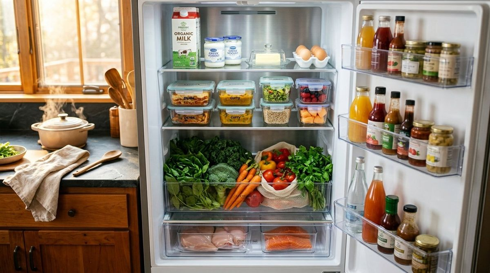
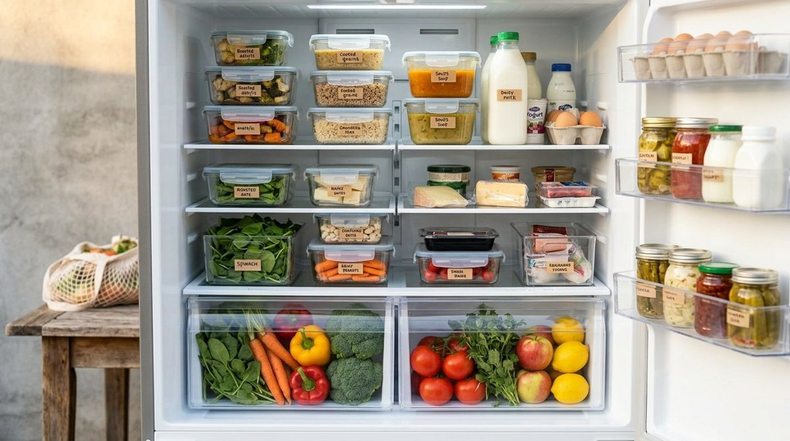

Good to know
Storage, food safety, labels, allergens and tips to reduce waste.

StorageHow to store food in the fridgeLearning how to manage your fridge correctly is the first step towards protecting your health and preserving food quality. Discover the golden rules of food technology and current regulations. Labels and dates'Use by' and 'best before': how to read food datesDiscover the fundamental difference between the 'use by' date and the best-before date to avoid waste and ensure your safety at the table according to EU regulations.AllergensAllergens and cross-contamination: how to avoid them in the kitchenDiscover how to identify the 14 main allergens and apply the best prevention techniques to avoid cross-contamination, ensuring every dish is safe and compliant with EU regulations.
Labels and dates'Use by' and 'best before': how to read food datesDiscover the fundamental difference between the 'use by' date and the best-before date to avoid waste and ensure your safety at the table according to EU regulations.AllergensAllergens and cross-contamination: how to avoid them in the kitchenDiscover how to identify the 14 main allergens and apply the best prevention techniques to avoid cross-contamination, ensuring every dish is safe and compliant with EU regulations.
Anti-wasteReducing food waste: simple habits that workEvery year, tonnes of perfectly edible food are wasted. Discover how to read labels and organise your kitchen to save money and protect the environment.